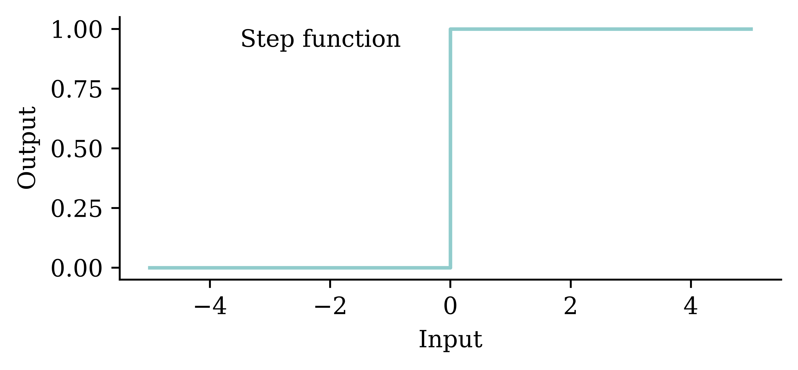
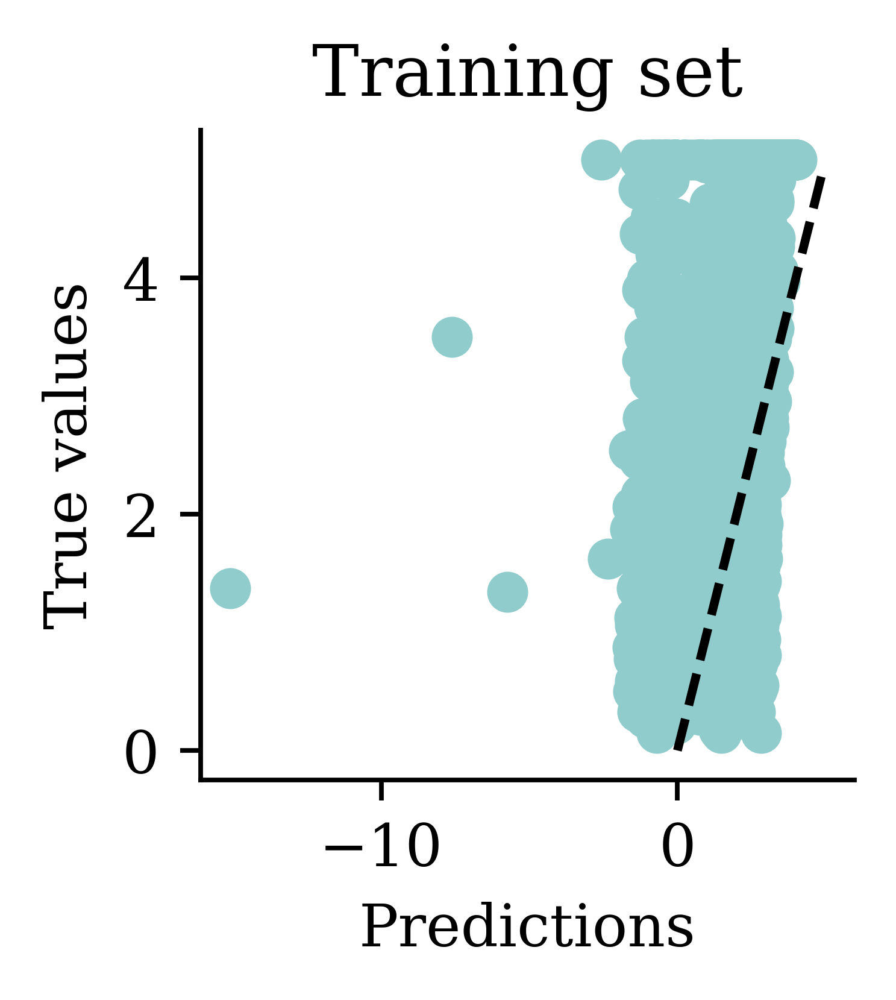
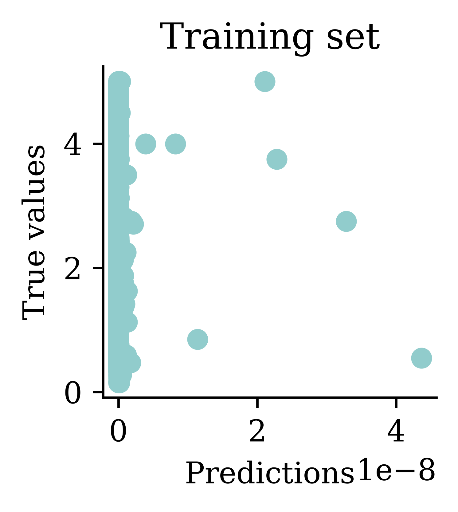

AI & Deep Learning
ACTL3143 & ACTL5111 Deep Learning for Actuaries
The rational behaviour paradigm won out
“For these reasons, the rational-agent approach to AI has prevailed throughout most of the field’s history. In the early decades, rational agents were built on logical foundations and formed definite plans to achieve specific goals. Later, methods based on probability theory and machine learning allowed the creation of agents that could make decisions under I uncertainty to attain the best expected outcome. In a nutshell, AI has focused on the study and construction of agents that do the right thing.”
— Russell & Norvig (2021, p. 22)

Question: When do you think the term “machine learning” was first coined?
Shakey the Robot (~1966 – 1972)


The minimax algorithm


Chess
Deep Blue (1997)


Machine Learning
Tried making a computer smart, too hard!
Make a computer that can learn to be smart.
“[Machine Learning is the] field of study that gives computers the ability to learn without being explicitly programmed”
— Samuel (1959)
AI eventually become dominated by one approach, called machine learning, which itself is now dominated by deep learning (neural networks).
You can study a 12 week course on AI and never touch on machine learning…

Image Classification I
What is this? 
Options:
- punching bag
- goblet
- red wine
- hourglass
- balloon
Image Classification II
What is this?

Options:
- sea urchin
- porcupine
- echidna
- platypus
- quill
Image Classification III
What is this?

Options:
- dingo
- malinois
- German shepherd
- muzzle
- kelpie
ImageNet Challenge (2012)
ImageNet and the ImageNet Large Scale Visual Recognition Challenge (ILSVRC); originally 1,000 synsets.

AlexNet — a neural network developed by Alex Krizhevsky, Ilya Sutskever, and Geoffrey Hinton — won the ILSVRC 2012 challenge convincingly.
Needed a graphics card
A graphics processing unit (GPU)

“4.2. Training on multiple GPUs A single GTX 580 GPU has only 3GB of memory, which limits the maximum size of the networks that can be trained on it. It turns out that 1.2 million training examples are enough to train networks which are too big to fit on one GPU. Therefore we spread the net across two GPUs.”
— Krizhevsky et al. (2012)
Lee Sedol plays AlphaGo (2016)
Deep Blue was a win for AI, AlphaGo a win for DL.

Lee Sedol playing AlphaGo AI
I highly recommend this documentary about the event.
Generative Adversarial Networks (2014)
https://thispersondoesnotexist.com/


Diffusion models (2020)


ChatGPT (2022)

Test ChatGPT’s ability to:
- generate images
- translate code
- explain code
- run code
- analyse a dataset
- critique code
- critique writing
- voice chat with you
Compare to Copilot.
Reasoning models (2024)
Reasoning is basically automating the old trick of adding “do this step-by-step” to your prompts.


Using the larger language models
- Zoom out as far as possible
- Give it as much relevant context as possible
- Better if it’s easy to ingest (LaTeX or Python/R code), otherwise it has to convert to text
- A simple instruction in the prompt is enough
- Context sizes for the top models have become quite long
- I’ve had the best results when it reasons for 20–30 minutes; then I review each potential issue it finds.

Claude Code (2025)

Let the LLM take control of your terminal/computer.
To get an introduction to using the terminal, check this recording.
A taxonomy of problems

New ones:
- Reinforcement learning
- Semi-supervised learning
- Active learning
Supervised learning: mathematically

A recipe for supervised learning.
Self-supervised learning
Data which ‘labels itself’. Example: language model.


Example: image super-resolution


Other examples: image inpainting, denoising images.
Example: Deoldify images

A deoldified version of the famous “Migrant Mother” photograph.
An artificial neuron

A neuron in a neural network with a ReLU activation.
One neuron
\begin{aligned} z~=~&x_1 \times w_1 + \\ &x_2 \times w_2 + \\ &x_3 \times w_3 . \end{aligned}
a = \begin{cases} z & \text{if } z > 0 \\ 0 & \text{if } z \leq 0 \end{cases}
Here, x_1, x_2, x_3 are just some fixed data.
The weights w_1, w_2, w_3 should be ‘learned’.
One neuron with bias

A basic neural network

A basic fully-connected/dense network.
Feature engineering


Quiz
In this ANN, how many of the following are there:
- features,
- targets,
- weights,
- biases, and
- parameters?
What is the depth?

Data science always starts with the data!
The target variable is the median house value for California districts, expressed in $100,000’s. This dataset was derived from the 1990 U.S. census, using one row per census block group. A block group is the smallest geographical unit for which the U.S. Census Bureau publishes sample data (a block group typically has a population of 600 to 3,000 people).

What are Keras and PyTorch?
Keras is a common way of specifying, training, and using neural networks. It gives a simple interface to various backend libraries, including PyTorch.

The Keras application programming interface (API)
Plot the predictions


Loss curve

Predictions
Min prediction: -6.00
Max prediction: 8.25
Try different activation functions

Plot the predictions


GPT can double-check these results

I’d previously given it the CSV of the data.

Choosing when to stop training

Illustrative loss curves over time.

{kind=link}
{kind=link}
{kind=link}
{kind=link}